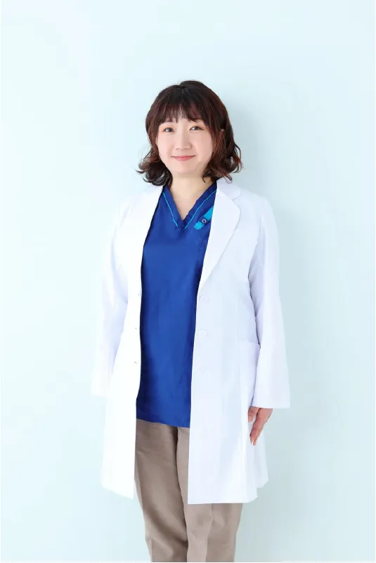
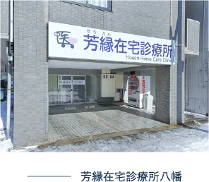
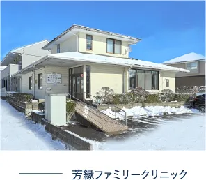
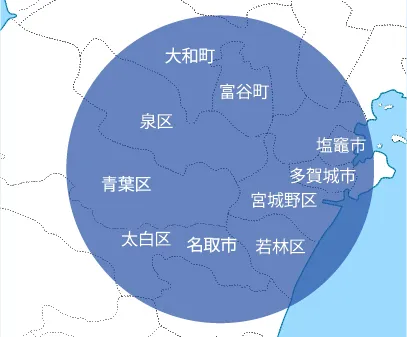

最新のお知らせをご案内します
地域への感謝を持って
訪問診療と遠隔診療を結び
多くの人に寄り添う在宅医療を提供します。
下記のような診察を行うことができます。
縁ある人に貢献する。
出会った患者様とそのご家族に対して、最善の医療を提供し
生活の質の向上を目指します。
一人ひとりの関わりを大切にし、皆様の健康と幸せに貢献します。
芳縁会の目指す未来。
年齢、性別、人種、国籍、信仰、社会的地位に関係なく、
全ての人々が平等に医療サービスを受けることができ、
不安がなく最期まで幸せに生きることができる社会の実現。
地域の方と連携し、患者様の支えになる。
私たちがただ一方的に医療サービスを提供するだけでなく、
家族や地域の人々と共に問題を解決し、互いに支え合いながら、
より健康で豊かな地域社会を創り上げることです。
私は中国国籍の女医です。20歳の時、京都への留学を契機に来日しました。
その後、東北大学を受験し2011年に医師国家資格を取得しました。
これまでに脳神経外科医として、東北地方の複数の中核病院の病棟・外来・救急で臨床経験を積んできました。
在宅療養支援のための診療所を開設し、日本の方々に恩返しをしていきたいと思います。
何卒、皆様の応援をどうぞよろしくお願いいたします。

理事長
ジャ・ウェンティン
経歴
中国 湖南省出身
| 2011年 | 東北大学医学部卒 |
| 2011年 | 東北大学病院 初期研修医 |
| 2013年 | 東北大学病院 脳神経外科医員 |
| 東北地方中核病院（総合病院） 脳神経外科 | |
| 広南病院 脳神経外科 | |
| 2020年 | 芳縁在宅診療所 院長 |
| 2022年 | 医療法人芳縁会 理事長 |
所属
日本脳神経外科学会
日本脳卒中学会



訪問診療の可能地域
仙台市全域
名取市、多賀城市、塩釜市、富谷市